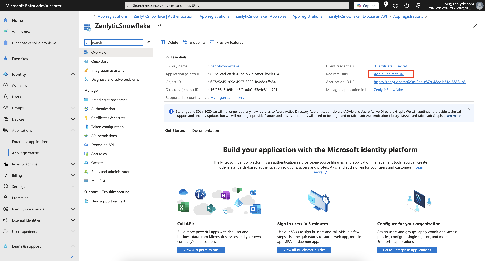
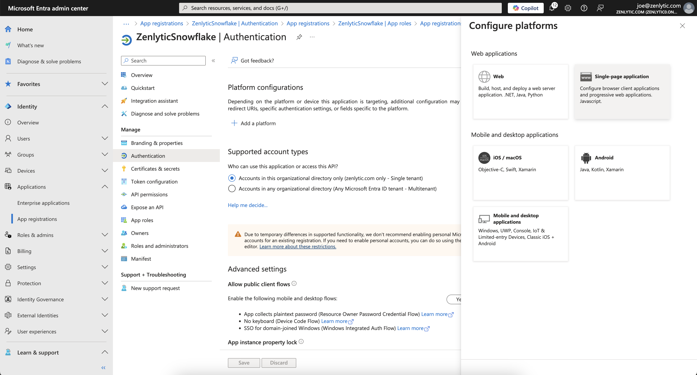
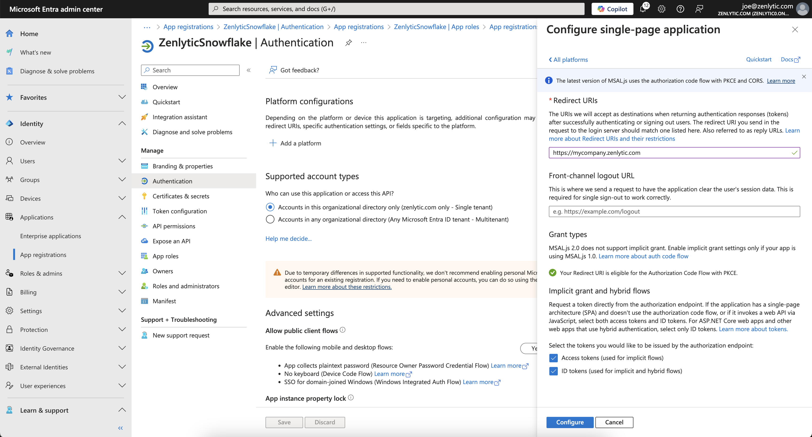
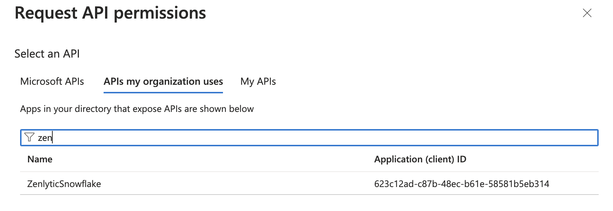

Snowflake with Microsoft Entra
This document will guide you through the process of enabling Microsoft Entra (formerly Active Directory) as an authentication option with Snowflake.
Outcome
- You'll have a custom sign in page with an option to Sign in with Microsoft Entra.
- You'll be able to control access to Zenlytic via Microsoft Entra
Prerequisites
- Before continuing make sure you understand the full process outlined here in Snowflake's guide. This guide mostly comprises Snowflake's, with some extra context added in some potentially confusing areas.
Understanding the Requirements
Zenlytic will need both access to both of the flows listed in Snowflake's guide:
- The authorization server can grant the OAuth client an access token on behalf of the user.
- The authorization server can grant the OAuth client an access token for the OAuth client itself.
Step 1: Configure Zenlytic in Microsoft Entra ID
Create the OAuth Resource
- Navigate to the Microsoft Azure Portal and authenticate.
- Navigate to Microsoft Entra ID.
- Click on App Registrations.
- Click on New Registration.
- Enter
Zenlytic Snowflake, or similar value as the Name. - Verify the Supported account types is set to Single Tenant.
- Leave Redirect URI empty
- Click Register.
Expose the API
- Click on Expose an API.
- Click on the Add link next to Application ID URI to set the
Application ID URI.
Important
The Application ID URI must be unique within your organization's directory, such as https://your.company.com/4d2a8c2b-a5f4-4b86-93ca-294185f45f2e.
Tip: You can use a unique id generator website like UUID Generator for the second part of the url
- Now we'll add the scope for the web app client, click on Add a scope to add a scope representing the Snowflake role.
- Enter the scope by having the name of the Snowflake role with the
session:scope:prefix. For example, for the Snowflake Analyst role, entersession:scope:analyst. - Select who can consent.
- Enter a display name for the scope (e.g.: Account Admin).
- Enter a description for the scope (e.g.: Can administer the Snowflake account).
- Click Add Scope.
- Enter the scope by having the name of the Snowflake role with the
- And now we'll add the scope for the api
- Click on Manifest.
- Locate the
appRoleselement. - Enter an App Role with the following settings.
- The App Role manifests as follows.
| Setting | Description |
|---|---|
| allowedMemberTypes | Application |
| description | A description of the role |
| displayName | A friendly name for users to view |
| id | A unique ID. You can use the [System.Guid]::NewGuid() function from PowerShell to generate a unique ID if needed. |
| isEnabled | Set to true |
| origin | Set to Application |
| value | Set to the name of the Snowflake role with the session:role: prefix. For the Analyst role, enter session:role:analyst |
The App Role manifests as follows.
"appRoles":[{
"allowedMemberTypes": [ "Application" ],
"description": "Account Administrator.",
"displayName": "Account Admin",
"id": "3ea51f40-2ad7-4e79-aa18-12c45156dc6a",
"isEnabled": true,
"origin": "Application",
"value": "session:role:analyst"
}]
- Click Save
Set up Redirect URI
- Go to the home page of your new
Zenlytic SnowflakeApp Registration and click Add a Redirect URI

- Click Add a Platform
- Choose Single-page application

- Under the Redirect URIs section, enter
https://<your_company_subdomain>.zenlytic.com\ a. Ex:https://mycompany.zenlytic.com\ b. If you're not sure what your subdomain is, reach out to your Zenlytic contact - Select Access tokens (used for implicit flows) and ID tokens (used for implicit and hybrid flows)
- Click Add a Platform
- Choose Single-page application
- Click Configure
- Under the Redirect URIs section, enter
https://<your_company_subdomain>.zenlytic.com\ a. Ex:https://mycompany.zenlytic.com\ b. If you're not sure what your subdomain is, reach out to your Zenlytic contact or email support Select Access tokens (used for implicit flows) and ID tokens (used for implicit and hybrid flows)

- Click Configure
Step 2: Create the OAuth Client
- In the Overview section of your
Zenlytic Snowflakeapplication , copy theClientIDfrom the Application (client) ID field. - Click on Certificates & secrets and then New client secret.
- Add a description of the secret.
- Select the time period that you feel comfortable with. Once this secret expires, Zenlytic will lose the ability to authenticate with Snowflake. You'll need to generate and share with Zenlytic a new secret before that expires to avoid downtime.
- Click Add. Copy the secret for later.
Now we need to configure Delegated permissions for the Zenlytic
- Click on API Permissions.
- Click on Add Permission.
- Click on My APIs.
Click on the Snowflake OAuth Resource that you created in Step 1: Configure Zenlytic in Microsoft Entra ID

- Click on the Delegated Permissions box.
- Check on the Permission related to the Scopes defined in the Application that you wish to grant to this client.
- Click Add Permissions.
- Choose the permission you wish to grant Zenlytic
- Click Add Permission.
Now we need to configure API permissions for Applications as follows.
- Click on API Permissions.
- Click on Add Permission.
- Click on My APIs.
Click on the Snowflake OAuth Resource that you created in Step 1: Configure Zenlytic in Microsoft Entra ID

- Click on the Application Permissions.
- Check on the Permission related to the Roles manually defined in the
Manifestof the Application that you wish to grant to this client. - Click Add Permissions.
- Choose the permission you wish to grant Zenlytic
- Click Yes.
Step 3: Next Steps
- You'll now need to make sure your Entra instance and Snowflake have the appropriate security integrations. Follow the guide here.
- Next, you'll need to send your Zenlytic contact the appropriate information outlined here.
- Reach out to your Zenlytic contact or support@zenlytic.com with any questions/issues about the process